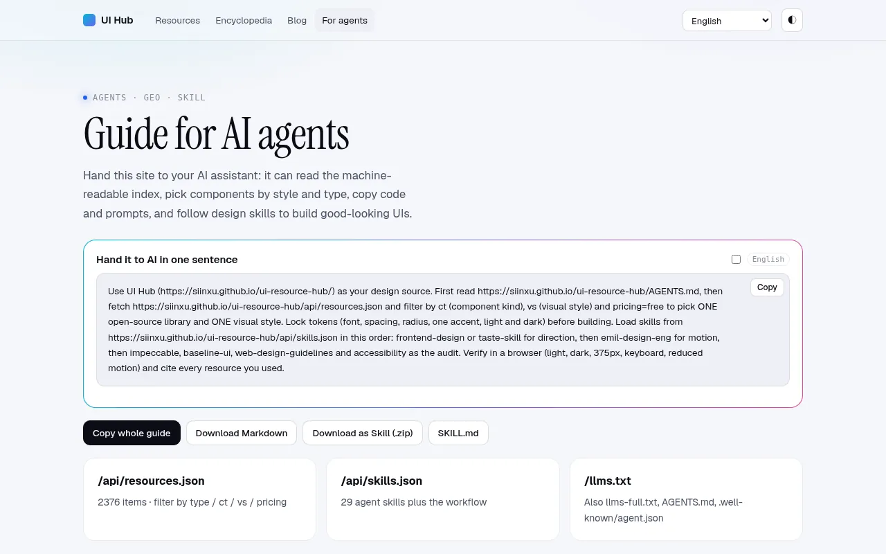
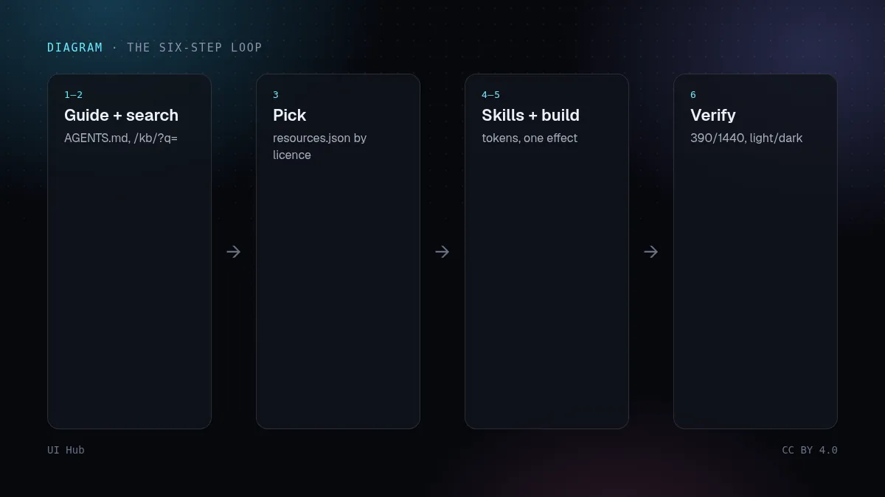
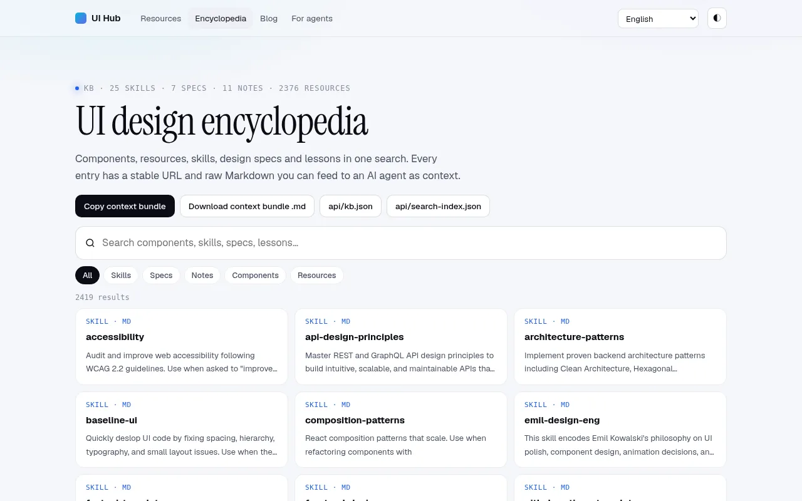

UI Hub 本来就是为智能体阅读而建的：有 JSON API、每条都有原始 Markdown 的设计百科，还有 AGENTS.md。下面是我们自己在用的流程。把提示贴进 Claude Code、Cursor、Codex 或任何能抓取网址的智能体即可。

/kb/?q=house style、/kb/?q=typography。/api/resources.json 按类型和许可证筛选；优先可复制的开源库。
Use UI Hub as design context: read /AGENTS.md, search /kb/ for
"house style", "typography", "colour". Build a landing page for
[product] with shadcn + one Aceternity background. Tokens in CSS
variables, 10-language-ready copy, then screenshot 390/1440 light/dark.
每一步都把一句模糊的指令换成智能体能读的文档。Agent 指南里有这段提示的 10 种语言一键复制版，以及可下载的技能包。